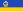

List of Mongolian provinces by GDP
This is a list of Mongolian provinces by GDP and GDP per capita. The Mongolian tögrög has been converted to the international dollar using the IMF's Purchasing Power Parity conversion rate.[1]
Provinces by GDP
[edit]The following table is the list of the provinces of Mongolia by GDP in 2022 according to data by the National Statistics Office of Mongolia.[2]
| Rank | Region | GDP in millions of MNT (Nominal) |
GDP in millions of USD (PPP) |
% of national GDP |
|---|---|---|---|---|
| 1 | Ulaanbaatar | 34,008,953.8 | 30,594.6 | 63.15% |
| 2 | Orkhon | 3,349,741.5 | 3,013.4 | 6.22% |
| 3 | Ömnögovi | 2,880,599.2 | 2,591.4 | 5.35% |
| 4 | Töv | 1,033,029.2 | 929.3 | 1.92% |
| 5 | Selenge | 1,024,360.0 | 921.5 | 1.90% |
| 6 | Khovd | 974,691.8 | 876.8 | 1.81% |
| 7 | Khövsgöl | 951,539.9 | 856.0 | 1.77% |
| 8 | Dornod | 943,575.3 | 848.8 | 1.75% |
| 9 | Arkhangai | 864,131.9 | 777.4 | 1.60% |
| 10 | Övörkhangai | 803,562.6 | 722.9 | 1.49% |
| 11 | Sükhbaatar | 770,709.0 | 693.3 | 1.43% |
| 12 | Darkhan-Uul | 755,747.3 | 679.9 | 1.40% |
| 13 | Khentii | 729,725.9 | 656.5 | 1.36% |
| 14 | Uvs | 694,271.3 | 624.6 | 1.29% |
| 15 | Bayan-Ölgii | 658,648.1 | 592.5 | 1.22% |
| 16 | Dornogovi | 655,731.8 | 589.9 | 1.22% |
| 17 | Zavkhan | 651,636.3 | 586.2 | 1.21% |
| 18 | Bulgan | 549,818.9 | 494.6 | 1.02% |
| 19 | Bayankhongor | 541,283.9 | 486.9 | 1.01% |
| 20 |  Govi-Altai | 445,308.4 | 400.6 | 0.83% |
| 21 | Dundgovi | 414,934.6 | 373.3 | 0.77% |
| 22 | Govisümber | 149,543.9 | 134.5 | 0.28% |
| 53,851,544.5 | 48,445.1 | 100% |
Provinces by GDP per capita
[edit]The following table is the list of the provinces of Mongolia by GDP in 2022 according to data by the National Statistics Office of Mongolia.[3]
| Rank | Region | GDP per capita in MNT (Nominal) |
GDP per capita in USD (PPP) |
% of national average |
|---|---|---|---|---|
| 1 | Ömnögovi | 39,223,310 | $35,285 | 243.3% |
| 2 | Orkhon | 31,545,390 | $28,378 | 195.7% |
| 3 | Ulaanbaatar | 21,692,300 | $19,515 | 134.6% |
| 4 | Sükhbaatar | 11,761,520 | $10,581 | 73.0% |
| 5 | Dornod | 11,151,660 | $10,032 | 69.2% |
| 6 | Töv | 11,035,220 | $9,927 | 68.5% |
| 7 | Khovd | 10,769,840 | $9,689 | 66.8% |
| 8 | Selenge | 9,450,430 | $8,502 | 58.6% |
| 9 | Khentii | 9,175,250 | $8,254 | 56.9% |
| 10 | Dornogovi | 9,112,070 | $8,197 | 56.5% |
| 11 | Arkhangai | 9,042,820 | $8,135 | 56.1% |
| 12 | Bulgan | 8,892,720 | $8,000 | 55.2% |
| 13 | Zavkhan | 8,856,280 | $7,967 | 54.9% |
| 14 | Dundgovi | 8,759,250 | $7,880 | 54.3% |
| 15 | Govisümber | 8,263,010 | $7,433 | 51.3% |
| 16 | Uvs | 8,130,020 | $7,314 | 50.4% |
| 17 | 7,612,630 | $6,848 | 47.2% | |
| 18 | Darkhan-Uul | 7,222,080 | $6,497 | 44.8% |
| 19 | Khövsgöl | 6,905,270 | $6,212 | 42.8% |
| 20 | Övörkhangai | 6,857,800 | $6,169 | 42.5% |
| 21 | Bayan-Ölgii | 6,035,000 | $5,429 | 37.4% |
| 22 | Bayankhongor | 6,027,060 | $5,422 | 37.4% |
| 16,121,030 | $14,503 | 100% |
See also
[edit]References
[edit]- ^ "Report for Selected Countries and Subjects". www.imf.org. Retrieved 2023-12-06.
- ^ "GROSS DOMESTIC PRODUCT, by region, aimags and the Capital". www.1212.mn. Mongolian Statistical Information Service. Retrieved 2023-12-06.
- ^ "GROSS DOMESTIC PRODUCT PER CAPITA, by region, aimags and the Capital". www.1212.mn. Mongolian Statistical Information Service. Retrieved 2023-12-06.